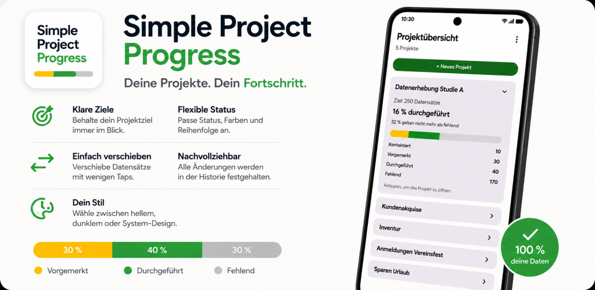

Google-Gruppe beitreten
Damit Google dich als Beta-Tester erkennt, tritt bitte zunächst einmalig der Google-Gruppe bei.
Google-Gruppe beitretenAndroid-App für klare Fortschrittsübersichten
SimpleProjectProgress unterstützt dabei, den Fortschritt individueller Projekte einfach, flexibel und übersichtlich zu dokumentieren.
Die App passt sich dem Projekt an – nicht umgekehrt.

Geschlossener Beta-Test
Vielen Dank, dass du dir Zeit nimmst.
Mit deinem Feedback hilfst du dabei, die App vor der Veröffentlichung weiter zu verbessern.
Der gesamte Ablauf dauert nur ca. 3 Minuten.
Anschließend sollte die App mindestens 14 Tage installiert bleiben. Ein tägliches Öffnen der App ist nicht erforderlich.
Nach der Veröffentlichung kannst du die App selbstverständlich weiterhin nutzen und erhältst zukünftige Updates bequem über den Google Play Store.
Schritt für Schritt
Folge den vier Schritten der Reihe nach. Jeder Schritt öffnet sich in einem neuen Browser-Tab.
Damit Google dich als Beta-Tester erkennt, tritt bitte zunächst einmalig der Google-Gruppe bei.
Google-Gruppe beitretenBestätige anschließend deine Teilnahme am geschlossenen Beta-Test im Google Play Store.
Beta-Test startenInstalliere anschließend die aktuelle Beta-Version von SimpleProjectProgress.
Wichtig: Bitte die App mindestens 14 Tage installiert lassen.
App installierenVielen Dank für deine Unterstützung!
Ich freue mich über dein Feedback und Verbesserungsvorschläge.
Feedback sendenEigene Status, individuelle Zielwerte und eine klare Fortschrittsanzeige machen SimpleProjectProgress zu einem schlanken Werkzeug für Projekte, bei denen Stückzahlen, Datensätze, Vorgänge oder andere Einheiten im Mittelpunkt stehen.
Rechtliches und Kontakt